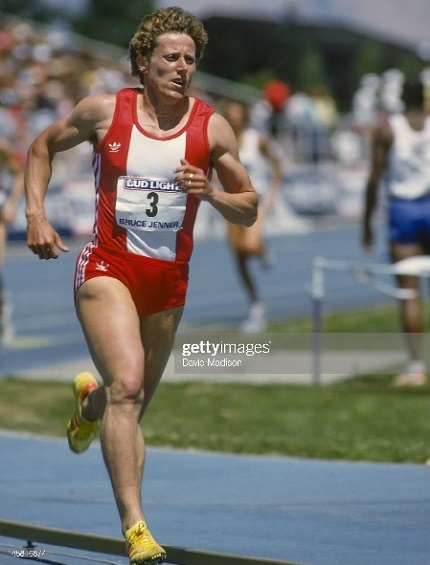

Os atletas a seguir estabeleceram records do atletismo, que permanecem imbatíveis no século XXI.
Conheça os records, por ordem de antiguidade.
1. Jarmila Kratochvílová – 800m – 39 Anos
A atleta da República Checa é recordista dos 800 metros com o tempo de 1'53''28, alcançados em 1983. Apenas uma atleta, Pamela Jelimo, do Quênia, em 2008, chegou a um segundo da marca de Kratochvílová.
